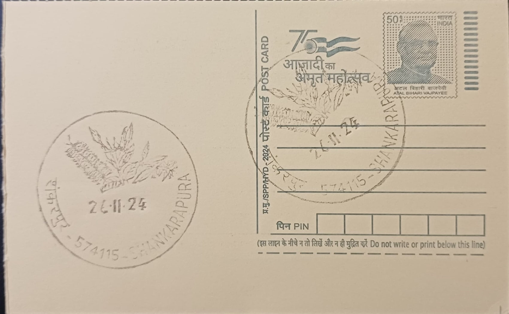

Shankarpura Mallige
ಶಂಕರಪುರ ಮಲ್ಲಿಗೆ


Shankarpura mallige, known more formally in trade and horticultural literature as Udupi mallige, is a cultivar of Jasminum sambac grown in and around the coastal village of Shankarapura in Udupi district. Local accounts trace the flower's commercial cultivation to 1934, when Reverend Basil Salvadore Peres, sent as chaplain to the Christian community of the area, encouraged families in neighbouring Pangala to take up jasmine growing as a settled occupation rather than a casual garden crop. Over succeeding decades the practice spread from Shankarapura into adjoining villages such as Pangala, Kurkalu, Moodubettu, Innanje and Shirva, consolidating into a distinct regional strain whose name is now inseparable from the coastal belt where it is raised.
The flower's core significance lies in its singular combination of strong fragrance, pronounced whiteness and comparatively large bud size, qualities attributed to the laterite soil and humid littoral climate of coastal Karnataka. These attributes earned Udupi mallige a Geographical Indication tag in 2013, placing it alongside other regionally distinctive Indian agricultural products whose reputation is tied to a specific micro-climate and soil type rather than to variety alone. Within Karnataka and the wider Konkan and coastal belt, the flower is prized above most other jasmine types for temple offerings, bridal and festival hair adornment, and ceremonial use, and is frequently described in regional media as the most expensive jasmine variety sold in local markets.
Cultivation remains overwhelmingly a smallholder activity, with households in Shankarapura and its neighbouring villages tending jasmine creepers on modest plots and depending on the crop, together with the associated work of stringing garlands, as a primary source of livelihood. Flowers must be picked in the dark, pre-dawn hours, since buds plucked after sunrise in the coastal heat lose both fragrance and market value within hours, a labour pattern that shapes the daily rhythm of growing families. The flowers are sold not by weight but by a traditional unit called the atti, composed of four chendus, each chendu itself a string of roughly eight hundred buds, a measure that has persisted even as the trade has scaled up to meet demand from distant cities.
Trading is concentrated at a daily marketplace, locally called the katte, where a small group of designated price-setters fixes the rate for the day's produce based on demand signals from wholesalers as far afield as Mumbai and from wedding planners in Mangaluru, producing prices that swing sharply between auspicious and ordinary days. Reporting in the regional press has repeatedly documented this volatility, with an atti fetching anywhere from under a hundred rupees to well over a thousand depending on season and occasion, and coverage during the COVID-19 lockdowns specifically highlighted how the collapse of weddings and temple gatherings left Shankarapura's growers with flowers they could neither sell nor transport.
Beyond the domestic flower and garland trade, surplus and export-grade buds are processed into jasmine essential oil, soaps, perfumes and related products for both Indian and overseas markets, giving the crop a secondary industrial outlet beyond its traditional ceremonial use. The GI registration has since encouraged cultivation attempts outside the home region, including documented efforts by growers elsewhere in south India to raise the variety under controlled conditions, underscoring the premium attached to the Shankarapura name even when the plant is grown away from its native coast. The flower market at Shankarapura, still governed by its informal daily price-fixing custom, continues to function as the principal point through which this small coastal village's jasmine reaches garland-makers, exporters and buyers across the country.
| Date of Introduction | November 26, 2024 |
|---|---|
| Address | Sub Postmaster, |
| Shankarpura SO, | |
| Udupi (dt.), Karnataka - 574115. |